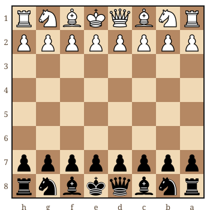
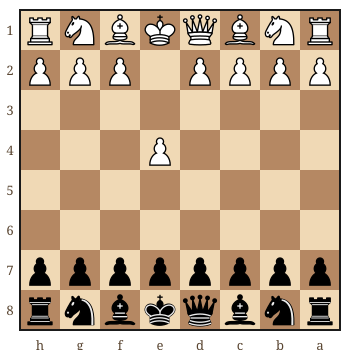
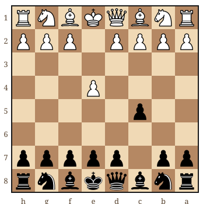
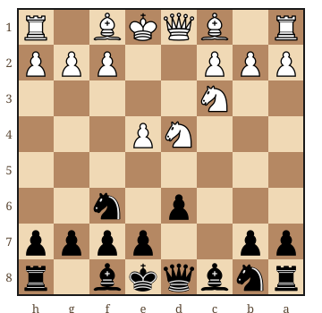
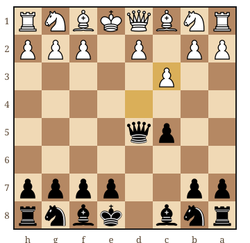
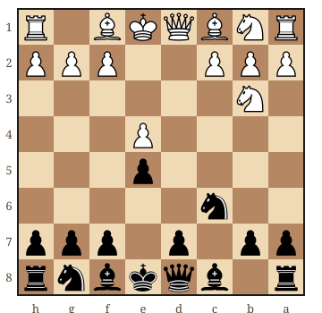
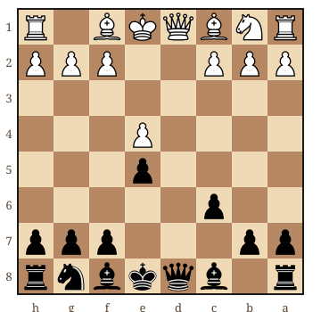
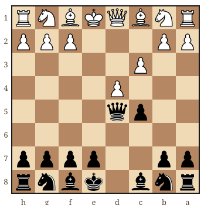
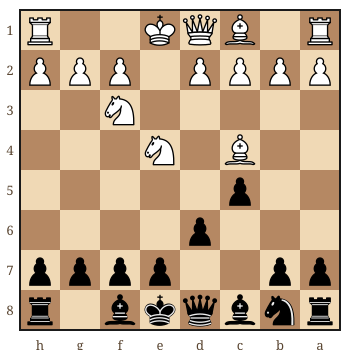
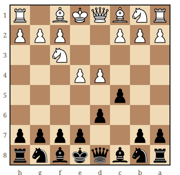

La défense sicilienne commence par 1. e4 c5. Les Noirs contrôlent d4 avec leur pion c au lieu d’occuper e5. Si les Blancs jouent ensuite d4 et que les Noirs échangent en d4, le pion c noir peut disparaître et ouvrir la colonne c pour les pièces noires.
- Avec les Noirs
- 1. e4 c5
- Repère ECO : B20
La Sicilienne possède beaucoup de théorie, mais son premier message tient en une phrase : les deux camps ne sont pas obligés de construire le même centre. Nous allons seulement regarder le rôle de …c5 et un échange typique en d4.
Vous pouvez la découvrir pour comprendre les positions asymétriques. Si vous débutez complètement, ne commencez pas par les noms de toutes ses variantes : regardez d’abord les pions et le développement.
À retenir avant de jouer
- Votre objectif
- Créer un centre asymétrique et préparer un contre-jeu avec les pièces et les ruptures de pions.
- La décision au centre
- Dans la Sicilienne ouverte, surveiller d4 et e4 ; contre c3, tenir compte du soutien blanc à d4.
- Le point de vigilance
- Calculer les fourchettes de pions avant de conclure qu’une pièce a été donnée gratuitement.
Dans ce guideChoisissez votre point de départ
Sur l’échiquier
Les premiers coups, un à un
Dans la notation française, C = cavalier, F = fou, D = dame et O-O = petit roque. T = tour et R = roi. Le signe x indique une capture, + un échec et # un mat. Les points de suspension indiquent un coup des Noirs.



Ce que chaque coup accomplit
- 1. e4
Les Blancs occupent le centre en e4.
- 1…c5
Le pion c5 contrôle d4. Les Noirs contestent le centre sans jouer le même pion que les Blancs.
Votre fil conducteur
Trois idées à garder en tête
Comprendre ce que …c5 contrôle
Le pion c5 vise d4. Il ne défend pas directement e5 : chaque poussée centrale a des conséquences différentes.
Observer l’échange sur d4
Si …cxd4 est suivi de Cxd4, les pions c noir et d blanc ont disparu. Les colonnes c et d deviennent semi-ouvertes pour des camps différents.
Ne pas oublier de sortir les pièces
Le premier coup de pion ne constitue pas tout un plan. Les cavaliers, les fous et le roi doivent trouver leurs places selon la structure.
Un exemple court pour comprendre le plan

Cet exemple de Sicilienne ouverte s’arrête au développement des cavaliers. L’échange en d4 a fait disparaître le pion c noir et le pion d blanc. Les Noirs disposent alors d’une colonne c sans pion noir, tandis que le pion blanc c2 y reste : c’est une colonne semi-ouverte pour les Noirs.
Deux choix des Blancs à reconnaître
2. Cf3 puis d4 : Vers une Sicilienne ouverte
Les Blancs peuvent préparer d4 et ouvrir le centre. C’est le chemin court illustré ici, sans poursuivre ses nombreuses branches.
2. c3 : Préparer d4 autrement
Les Blancs souhaitent soutenir une future poussée d4 avec le pion c3. La case c3 n’est alors plus immédiatement disponible pour le cavalier b1.
Ce sont des repères pour vous orienter. Vous n’avez pas besoin de mémoriser leurs ramifications pour commencer à jouer.
Comprendre ce qui se joue
Lire le centre et la structure de pions
Le premier coup …c5 oppose une méthode différente à 1. e4 : les Noirs contestent d4 avec un pion de côté. Leur pion e reste disponible pour une future poussée ou un soutien. Cette asymétrie concerne les pions et les colonnes ; elle ne signifie pas que les deux camps doivent attaquer immédiatement sur des ailes opposées.
Dans la Sicilienne ouverte illustrée, d4, …cxd4 et Cxd4 échangent le pion d blanc contre le pion c noir. La colonne c devient semi-ouverte pour les Noirs et la colonne d semi-ouverte pour les Blancs, tant que leurs autres pions restent en place. Une tour peut s’intéresser à une colonne semi-ouverte, mais elle doit pouvoir y accéder et disposer d’une cible : le nom de la colonne n’est pas encore un plan complet.
Les choix blancs qui évitent d4 immédiatement demandent une autre lecture. Après c3, le pion prépare d4 et occupe la case habituelle du cavalier b1. Après une reprise noire de dame en d5, les Blancs ne peuvent donc pas jouer Cc3 tant que leur pion reste en c3. C’est un détail utile : une réponse qui développe un cavalier avec une attaque dans une ouverture peut être impossible dans une autre.
Quelles cases chercher pour vos pièces ?
Ces placements sont des repères à vérifier dans la position, pas des coups à jouer sans regarder l’adversaire.
- Cavalier g8f6 dans le chemin ouvert étudié
- Il attaque e4. Vérifiez que le centre et les pions blancs permettent ce développement.
- Cavalier b8c6 dans certaines constructions
- La case libérée par …c5 peut lui convenir, mais l’ordre dépend des autres choix de structure. Il n’existe pas une case unique pour toutes les Siciliennes.
- Fou c8une diagonale compatible avec le pion d
- Le pion d6 ou un échange central influence sa sortie. Ne l’oubliez pas en concentrant tous vos coups sur l’aile dame.
- Fou f8e7 ou un autre développement selon les pions
- Un développement par g7 suppose une préparation différente avec …g6. Ne mélangez pas des morceaux de variantes sans comprendre leurs soutiens.
- Tours et roisécuriser le roi, puis évaluer la colonne c
- Une tour en c8 peut exercer une pression future. Avant cela, vérifiez le développement et les lignes que les Blancs peuvent ouvrir contre vous.
Comment réagir aux idées adverses
Si les Blancs jouent Cf3 puis d4
Vous pouvez étudier l’échange …cxd4 et Cxd4 pour comprendre la structure ouverte. Après …Cf6, e4 devient une cible et Cc3 peut le défendre. Ce duel central explique les développements de l’exemple, sans imposer une variante précise au-delà.
Si les Blancs jouent c3
Leur projet est souvent d4 avec un soutien de pion. La poussée noire …d5 conteste alors le centre immédiatement. Si la dame reprend ensuite en d5, le cavalier blanc ne peut pas arriver en c3 à travers son propre pion : les cases disponibles expliquent le changement de jeu.
Si les Blancs gardent le centre fermé
L’absence d’un échange immédiat en d4 change les colonnes et les cibles. Ne placez pas une tour en pensant à une colonne qui n’est pas encore ouverte. Continuez le développement et examinez les poussées centrales réellement possibles.
Une décision concrète
Après c3, le cavalier ne peut plus venir en c3
Les Blancs ont joué c3, les Noirs ont contesté le centre par …d5, puis la dame noire a repris en d5. Le pion blanc c3 occupe toujours sa case.

Quel coup central blanc est soutenu par le pion c3, sans prétendre attaquer la dame ?
Repérez d’abord les menaces et les cases contrôlées, puis proposez une réponse.
Lire l’analyse de la position
4. d4 utilise le soutien du pion c3 pour occuper le centre. Ce pion d4 ne chasse pas directement la dame d5 : les pions capturent en diagonale. Le point important est que Cc3 est actuellement impossible à cause du pion c3. La bonne décision doit partir des cases réellement disponibles.
Comparer pour comprendre
Le cavalier central est attaqué : reculer ou échanger ?
Un cavalier au centre contrôle souvent davantage de cases, mais les pions adverses peuvent le chasser. Dans cette Sicilienne illustrative, les Noirs ont développé leur cavalier b8 en c6, puis joué …e5 contre le cavalier blanc d4. Le pion noir e5 contrôle d4 et f4.
Les Blancs doivent traiter cette attaque. Ils peuvent déplacer le cavalier ou envisager de l’échanger contre celui de c6. Les deux choix gardent le matériel équilibré dans les suites montrées, mais l’un conserve les pièces et l’autre transforme la structure noire. Le but est d’apprendre ce bilan, sans entrer dans un répertoire de variantes.
Position commune de départ :
1. e4 c5 2. Cf3 Cc6 3. d4 cxd4 4. Cxd4 e5
Rejouez cette position, puis comparez les suites ci-dessous. Ce sont des exemples commentés : elles ne constituent pas deux recommandations équivalentes ni des coups à reproduire sans calculer.
Cb3 : conserver les deux cavaliers
5. Cb3

5. Cb3 retire le cavalier d4 de l’attaque du pion e5. Les deux camps conservent leurs cavaliers, et la structure des pions ne change pas dans ce seul coup. Le cavalier b3 exerce d’autres contrôles qu’en d4 : il faudra lui trouver un rôle au lieu de juger son recul seulement à sa distance du centre.
Le recul ne termine pas le développement blanc. Le fou f1 doit encore sortir, le roi doit pouvoir roquer et le pion e4 doit rester surveillé. Répondre à une attaque est nécessaire, mais il faut ensuite retrouver un projet pour les pièces restantes.
Cxc6 et …dxc6 : modifier les pièces et les colonnes
5. Cxc6 dxc6

Après 5. Cxc6 dxc6, les deux cavaliers ont été échangés. Le pion d7 noir reprend en c6 ; la colonne d ne contient plus de pion noir. Le fou c8 bénéficie aussi du départ de l’obstacle d7. L’échange ne fait donc pas que retirer une pièce attaquée : il donne aux Noirs une structure et des lignes différentes.
Il n’y a pas ici de pions noirs doublés sur c6 et c7 : le pion c noir avait déjà été échangé en d4 au début de cette Sicilienne. Le pion arrivé en c6 vient de d7. Reconstituer l’origine des pions empêche de copier un diagnostic valable dans une autre ouverture, comme certaines Espagnoles d’échange.
Vérifiez votre compréhension
Pourquoi le cavalier d4 doit-il réagir à …e5 ?
Le pion noir e5 contrôle d4 et peut capturer le cavalier au coup suivant. Le placement central ne le protège pas d’une attaque de pion.
Après Cxc6 et …dxc6, les Noirs ont-ils forcément des pions doublés sur la colonne c ?
Non. Dans cette suite, leur pion c a déjà été échangé en d4. Le pion d arrive en c6 sans pion noir restant en c7.
L’échange améliore-t-il seulement la position blanche ?
Non. Il enlève le cavalier attaqué, mais libère aussi d7 pour le fou c8 et transforme la colonne d. Il faut comparer les conséquences pour les deux camps.
À appliquer dans vos parties : Quand un pion chasse une pièce, listez les retraites et les échanges disponibles. Après un échange, recomptez les pions par colonne avant de parler de faiblesse. Ce travail de reconstruction est particulièrement utile dans les Siciliennes où plusieurs pions centraux disparaissent tôt.
Reconnaître les embranchements
Deux variantes à comprendre pour commencer
Ces lignes courtes montrent ce qui change dans le centre et le développement. Rejouez les coups, puis formulez le plan avec vos propres mots ; les réponses adverses peuvent vous amener à une autre position.
La Sicilienne ouverte : la colonne c se libère
1. e4 c5 2. Cf3 d6 3. d4 cxd4 4. Cxd4 Cf6 5. Cc3
Les Blancs échangent leur pion d contre le pion c noir et installent un cavalier en d4. Les Noirs attaquent e4 par …Cf6 ; Cc3 défend ce pion. Le centre s’ouvre, ce qui donne davantage de portée aux pièces.
Le plan à comprendre : Les Noirs peuvent poursuivre leur développement tout en gardant d5 comme rupture à préparer. Sur la colonne c, il ne reste plus de pion noir, mais le pion blanc c2 est toujours présent : c’est une colonne semi-ouverte pour les Noirs, pas une colonne entièrement ouverte.
L’Alapine : préparer d4 avec le pion c
1. e4 c5 2. c3 d5 3. exd5 Dxd5 4. d4

Avec c3, les Blancs préparent un centre d4–e4. Les Noirs réagissent immédiatement par …d5. Après les échanges, la dame noire reprend en d5 et les Blancs avancent d4.
Le plan à comprendre : Le pion c3 soutient d4, mais occupe la case où le cavalier b1 aimerait se développer. On ne peut donc pas chasser immédiatement la dame avec Cc3 dans cette position. Chaque choix de structure crée aussi une contrainte de développement.
Calculer avant de jouer
Piège et vigilance : La fourchette de pion après un sacrifice temporaire

1. e4 c5 2. Cf3 d6 3. Fc4 Cf6 4. Cc3 Cxe4 5. Cxe4
Avant de lire la suite, repérez les échecs, les captures et les pièces attaquées.
Voir la suite et le mécanisme
5… d5
Les Noirs ont échangé leur cavalier contre le pion e4, puis le cavalier blanc c3 a repris en e4. Le pion noir avance alors en d5 : il attaque simultanément le cavalier e4 et le fou c4. C’est une fourchette de pion. La combinaison commence par un sacrifice temporaire de cavalier ; il faut regarder la poussée centrale avant de conclure qu’une pièce est gagnée.
Comment éviter le problème ou y répondre
Les Blancs peuvent par exemple poursuivre 6. Fxd5 Dxd5 : les deux camps ont alors échangé une pièce mineure et un pion. Les Noirs n’ont pas gagné une pièce nette dans cette suite ; ils ont récupéré le matériel sacrifié. Face à une capture surprenante, cherchez la fourchette au coup suivant.
Suite de référence à rejouer depuis le début :
1. e4 c5 2. Cf3 d6 3. Fc4 Cf6 4. Cc3 Cxe4 5. Cxe4 d5 6. Fxd5 Dxd5
Passer de l’ouverture au milieu de partie
Quand l’ouverture se transforme en milieu de partie, comparez les colonnes, les cases centrales et la sécurité des rois. Une poussée de l’aile dame n’a pas la même valeur si votre roi est encore exposé au centre. L’asymétrie crée des possibilités des deux côtés, pas une permission d’attaquer sans développement.
Pour travailler la Sicilienne, analysez une structure à la fois : ouverte après l’échange en d4, ou construite avec c3. Mélanger leurs placements de pièces est une source d’erreurs plus fréquente que l’oubli d’un nom de variante.
Le nom et ses origines
D’où vient le nom « défense sicilienne » ?
Polerio analyse des positions de Sicilienne à la fin du XVIe siècle, notamment dans un manuscrit de 1594. D’autres auteurs italiens poursuivent leur étude. L’ancienneté des coups ne permet pas d’attribuer leur invention à une seule personne.
L’appellation renvoie à l’expression italienne « jeu sicilien », reprise et diffusée en anglais par Jacob Henry Sarratt au début du XIXe siècle. L’histoire du nom et celle des premières analyses ne correspondent donc pas à une seule date.
Le mot « sicilienne » est un nom historique. Sur l’échiquier, le repère utile pour commencer reste très simple : la réponse 1…c5 à 1. e4.
Les erreurs à éviter dans cette ouverture
Chercher la variante la plus longue
Les noms Dragon, Najdorf ou autres ne remplacent pas la compréhension de d4 et du développement. Vous pouvez commencer sans les apprendre.
Attaquer à l’aile avant d’avoir développé
Une position asymétrique n’autorise pas une attaque automatique. Vérifiez le centre, le roi et les menaces avant de pousser un pion de côté.
Croire qu’une colonne est utilisable immédiatement
Une colonne semi-ouverte est un potentiel. Les tours doivent encore pouvoir y accéder, et les cibles doivent être réelles.
À vous de jouer
Un exercice pour vérifier l’idée

Quel coup échange le pion c noir contre le pion central blanc d4 ?
Prenez quelques secondes pour choisir et expliquer votre coup.
Voir la réponse expliquée
3…cxd4 : le pion c5 capture le pion en d4. Après une reprise comme Cxd4, le pion c noir a disparu et les Noirs disposent d’une colonne c semi-ouverte. Ce changement de structure explique l’échange, sans promettre un avantage.
Votre prochaine séance de pratique
- Après 1…c5, montrez la case d4 et les pions qui pourront l’attaquer.
- Rejouez …cxd4 et Cxd4 puis repérez les colonnes semi-ouvertes.
- Jouez sans apprendre de variante longue et vérifiez d’abord la sécurité de vos pièces.
Besoin de comprendre vos propres parties ? Les cours d’échecs permettent de travailler à partir de vos positions.
Quelles ouvertures comparer ensuite ?
- Défense française : comprendre e6, d5 et le centre
Comparer deux centres asymétriques et leurs idées de contre-jeu.
- Défense Caro-Kann : comprendre c6 et d5 pour débuter
Étudier une réponse à e4 fondée sur la préparation de …d5.
Retrouver les onze ouvertures et choisir votre prochaine fiche.
Questions fréquentes
Quel coup définit la défense sicilienne ?
La réponse 1…c5 à 1. e4 définit la Sicilienne. Les Noirs contrôlent d4 avec le pion c.
Faut-il apprendre beaucoup de variantes pour la découvrir ?
Non. Pour une première découverte, le contrôle de d4, l’échange …cxd4 et le développement des pièces suffisent comme objectifs de travail. Un répertoire de compétition demande ensuite une étude supplémentaire.
Que veut dire Sicilienne ouverte ?
Dans le chemin illustré ici, les Blancs jouent d4, les Noirs capturent par …cxd4 et les Blancs reprennent. Cet échange ouvre des lignes au centre et différencie les structures des deux camps.